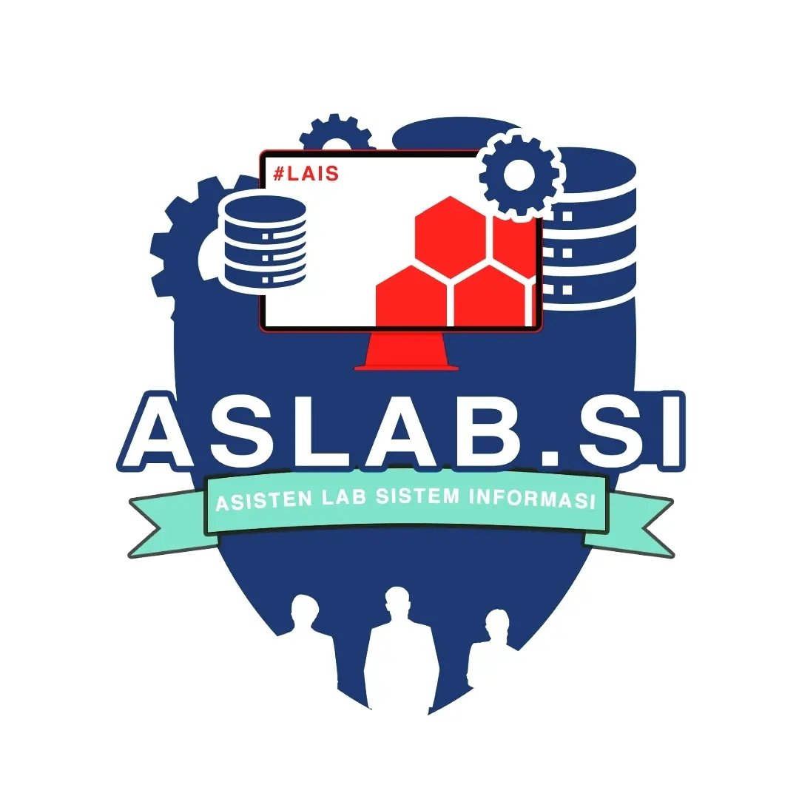

Laboratory Assistant of Information System
Beranda
Tentang
Struktur
Aturan & Syarat
Daftar
Data
Logout
PERATURAN PRAKTIKUM
Seluruh Mahasiswa Sistem Informasi WAJIB mengikuti praktikum sesuai waktu yang telah ditentukan.
Praktikan yang memiliki kepentingan WAJIB izin kepada Aslab yang bersangkutan.
Selain Praktikan kelas yang sedang mengikuti praktikum, Praktikan lain DILARANG memasuki Lab.
Praktikan WAJIB menjaga etika, tata krama, sopan santun dan menjaga kenyamanan serta kebersihan.
Setiap Praktikan WAJIB berpakain sopan dan rapi sesuai dengan kebutuhan.
Praktikan WAJIB bertanggung jawab atas seluruh fasilitas yang terdapat di lab.
Setiap Praktikan DILARANG makan di dalam lab.
PERSYARATAN PENDAFTARAN ASLAB SI
Angkatan 2019-2021
Scan KTM / file bukti registrasi terbaru
Scan KHS sesuai mata kuliah yang diambil
Nilai mata kuliah pada bidang yang ingin diambil MINIMAL B
Kemampuan komunikasi yang baik
Mampu bekerja dalam TIM